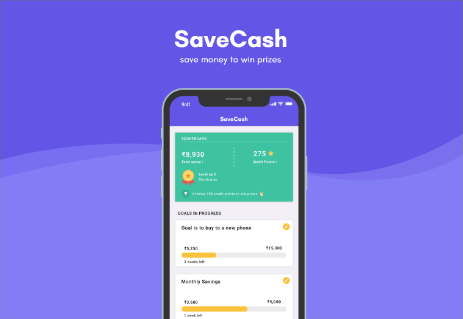
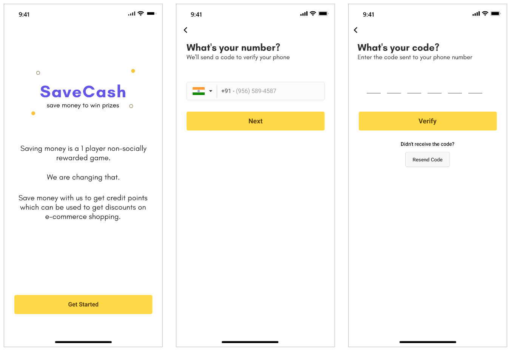
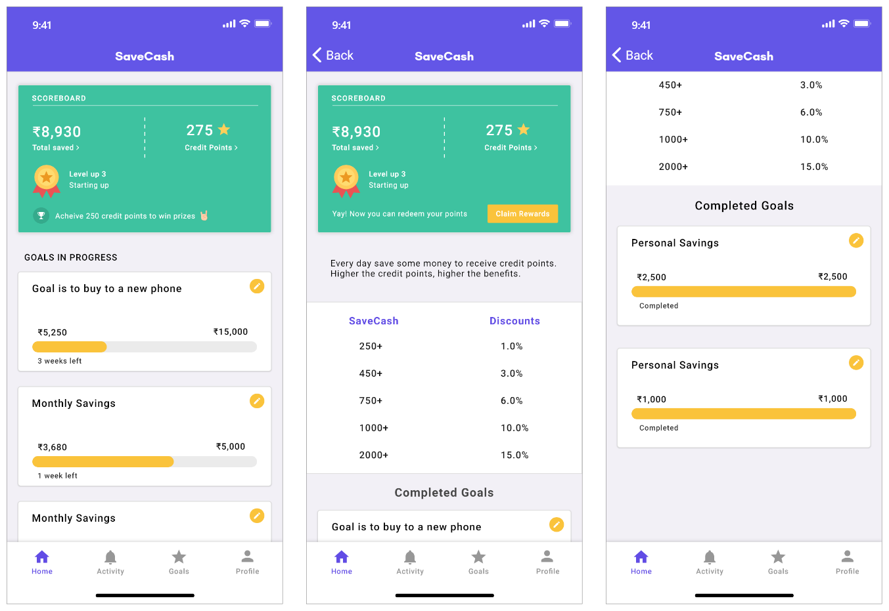
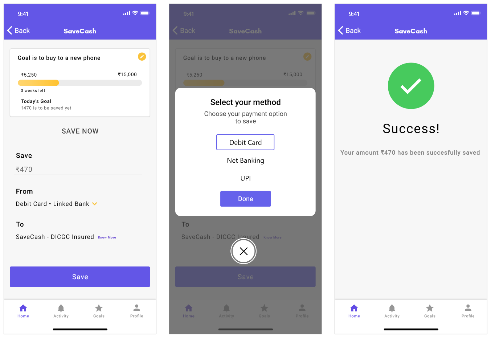
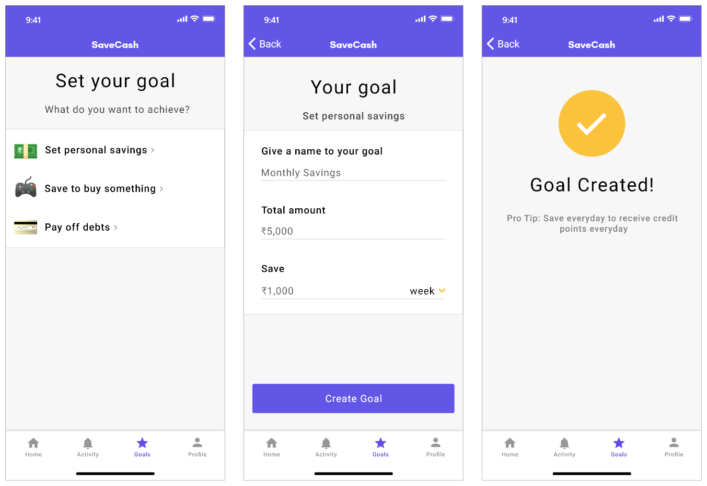
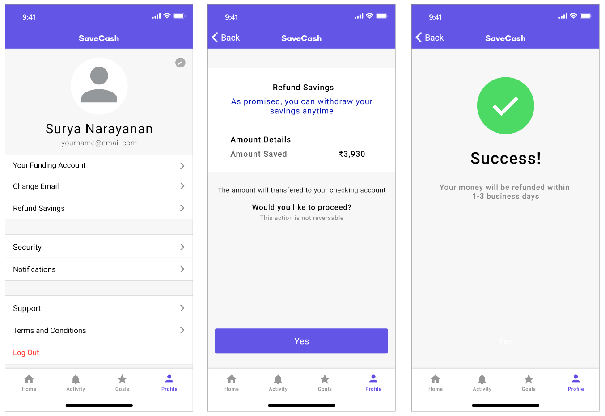

Saving money can be fun
Just a while ago, I read this Forbes article on what finance problems millennials face. Most of them are stuck with too much debt, inability to afford rent and other necessities.
As I searched more about this, I got to know about how important personal finance is for everyone. And taking good financial decisions can actually change your life for the better.
Education, investing and having no-debt are some great decisions but there's one thing that a lot of people aren't good at, and that is personal savings.
The Idea
Intrigued by this problem, I thought of creating something that encourages people to save more.
And the only way to make people do something that they don't like is to provide an incentive for them.
This is when I thought of gamifying personal finance and design an app which makes people save money while they also receive some benefits for doing it.
Research
Since the idea was a savings app which gives incentive for saving. I started researching on the internet more about this and found that -
Whenever and wherever possible, we are always encouraged to spend our money. You can look into any marketplace and find that there is some sort of spending encouragement.
This article extensively covers how companies understand psychology and motivate different people to spend more.
Credit card companies give us reward points which only amplify our spending habits. Brands often offer a free product with a purchase over a specific threshold. You spend more to get that "free" product.
There's nothing wrong about it. They're doing business and want to win at the end of the day which drives consumerism.
But this is gamification of spending money in real life. So why not in saving money?
Introducing SaveCash
Before getting into the app. I made this Venn diagram which explains it -
The basic concept was to encourage users to save money for an incentive.
But what kind of incentive?
Giving discounts depending upon their reward points on online marketplaces.
Features
- Create unlimited savings goal and receive reward points every time you save.
- No lock-in period for your savings. You can withdraw all your money anytime.
- A checking account where your money will be saved, which is DICGC-insured up to ₹100,000.
- Multiple options for saving money from debit card, net-banking and UPI.
- Use reward points to get discounts at various online websites.
After having a certain understanding of what the product should be like, I started sketching some low-fidelity wireframes. And after few a iterations, I ended up with this basic flow I was happy with.
Flow
Sign up and Log in
The app starts with a single onboarding page which gives the introduction. And I opted for a phone number based sign up. So after the phone verification, users have to fill the details like their name and email ID which will be used for log-in.
Homescreen
The homescreen shows your current saving goals with the number of remaining weeks, which is calculated by analyzing, how much on average you save daily. There's also a scoreboard which shows the total amount of money saved till now and your reward points.
Opening the scoreboard will show you the detailed info about how much discounts you can get based on your reward points and also an option to redeem them.
And scrolling down a bit will show you, your completed goals history.
Save money
When you select the current going saving goal, you enter this window where you can select your transaction method to save. The app gives you the amount of money you should save at that time based on the calculated time will it take to complete the goal.
The app offers different methods for saving from debit card, net-banking and UPI. Having multiple methods makes it easier for the user to save.
Goals
In the goals tab, you can easily set your based. Simply select what you want to achieve and then enter the total amount you want to save and also the amount you want to save per day or week. It's a not fixed rule that you've to save that much everyday or week but just gives that little push to save everyday.
Profile
The profile shows all the options to change such as your funding account and your email address. As this app promises of no lock-in period of your savings, you can withdraw your money anytime by selecting the "Refund Savings" option.
Bottom Note
During this project, I learned how important is to first clearly understand the problem, before jumping on to designing. Previously I used to start designing without having a complete understanding of what I should really make.
Besides this, I really enjoyed how this overall project turned out. I think I could have worked on how exactly the business model would work but design-wise I'm quite satisifed.
Thanks for reading! Reach out to me on Twitter